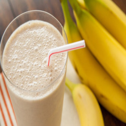

Description
This is a very simple recipe for a banana smoothie. This
recipe is slightly different from the rest because it is my own
personal recipe. It's a very simple recipe that is quick too
make and that only requires a handful of ingredients.
Ingredients
- 3 Bananas
- Milk or Water (1 cup)
- Taste better with milk but you can substitute with water
for a slightly healthier drink.
- Ice (1 cup)
Step-by-Step Instructions
- Peel all three banana's and place into a blender.
- Add 1 cup of water or milk into blender.
- Add 1 cup of ice into blender.
- Blend for 20-30 seconds.
Optional
You can change this smoothie into any type of smoothie by simply
replacing the banana for something else like mangoes, strawberries,
peaches, etc.
You can also just remove 1 banana and add half a cup of strawberry
to make it into a strawberry-banana smoothie.